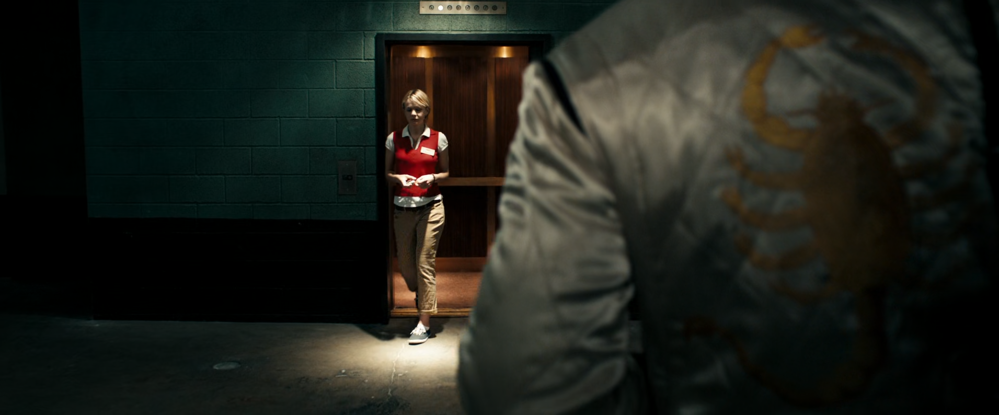
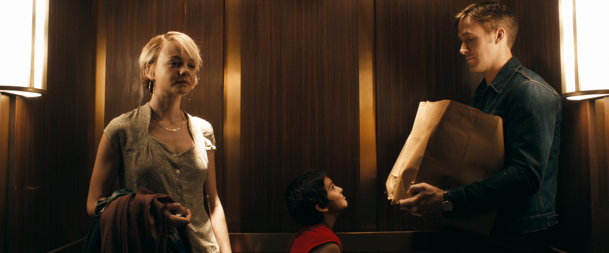
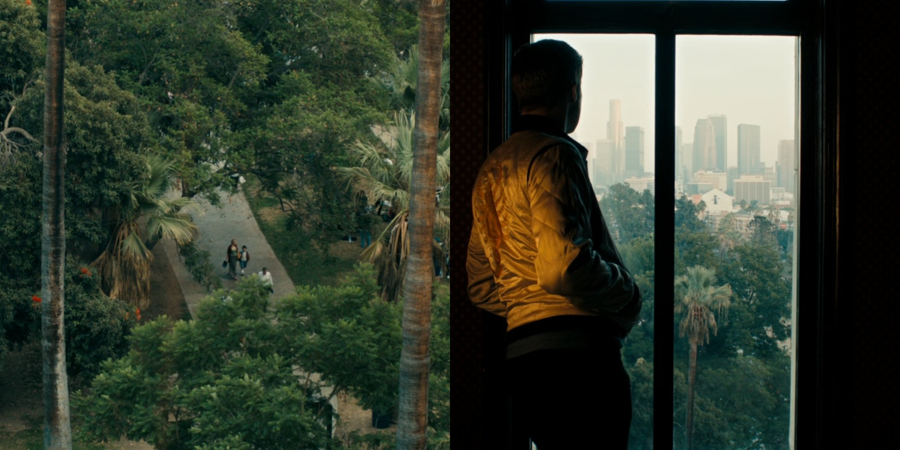
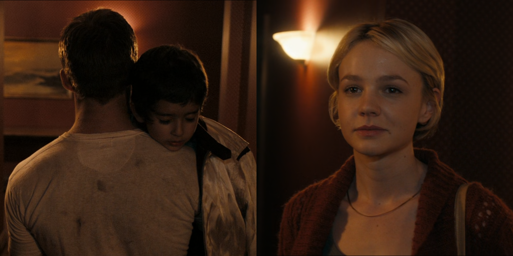

NGÔN NGỮ ĐIỆN ẢNH TRONG DRIVE (2011)
Written on March 28th, 2023 by Minh Tran
*Bài viết có tiết lộ nội dung phim
Drive là tác phẩm ra mắt năm 2011 của đạo diễn Nicolas Winding Refn, với Ryan Gosling đóng chính trong vai một gã tài xế vô danh. Bộ phim được lựa chọn để tranh giải Cành cọ vàng tại Liên hoan phim Cannes, tuy không thắng giải nhưng nó cũng giúp đạo diễn Refn giành được giải thưởng Đạo diễn xuất sắc nhất. Phim là câu chuyện về gã tài xế vô danh, về tính cảm của gã dành cho một người phụ nữ hàng xóm đã có gia đình (Carey Mulligan) cũng như cách gã bảo vệ tình yêu của mình một cách đầy trần trụi, đẫm máu. Điểm đặc biệt của bộ phim có lẽ không nằm ở câu chuyện, mà nằm ở cái cách mà đạo diễn truyền tải đến người xem thông qua ngôn ngữ điện ảnh. Phim khiến mình không thể thôi nghĩ về nó trong một khoảng thời gian, và với mình, đây chính là một trong những bộ phim hay nhất.
Bằng ngôn ngữ điện ảnh đầy tinh tế của mình, đạo diễn Refn đã lột tả được hết hai thái cực trái ngược nhau tồn tại song song bên trong gã tài xế. Anh yêu Irene một cách đầy giản dị, chân thành, anh làm mọi thứ vì cô, lặng lẽ hi sinh để bảo vệ cô an toàn. Nhưng vẫn anh tài xế đó, là một tính cách bạo lực đến đáng sợ, luôn chờ trực để bộc phát ra bên ngoài. Phim cũng có thể được coi như là cuộc hành trình trở thành người hùng của gã tài xế với tình yêu của đời mình. Với Drive, có lẽ lời thoại chỉ đóng vai trò thứ yếu, còn hình ảnh, âm nhạc, ánh sáng, màu sắc mới là yếu tố dẫn dắt câu chuyện, và đó chính là điểm khiến cho bộ phim với mình trở nên đặc biệt như vậy Trong bài viết này, mình sẽ tập trung phân tích ngôn ngữ điện ảnh của phim mà mình tìm hiểu được, có thể đúng hoặc sai, và cũng có thể hơi suy diễn theo kiểu học văn =)))
Những phân cảnh mở đầu
Cảnh mở đầu phim tóm tắt ngắn gọn nhưng đầy đủ về công việc mà gã tài xế đang làm: lái xe thuê cho những băng đảng làm ăn bất hợp pháp chạy trốn. Sau đó, phim chuyển cảnh đến phần giới thiệu, đồng thời bản nhạc điện tử “Nightcall” vang lên, gợi nhớ đến những âm hưởng của thập niên 80. Cùng với đó là những khung cảnh đầy tối tăm, lạnh lẽo trên con đường về nhà của tài xế. Cảm xúc trống rỗng, cô đơn của anh như được lột tả hết qua những hình ảnh và giai điệu này.

Khoảnh khắc tài xế gặp cô hàng xóm Irene lần đầu tiên trong phim, cũng ở phân cảnh này chúng ta được thấy hình ảnh con bọ cạp biểu tượng trên chiếc áo khoác của nhân vật chính. Có lẽ hình ảnh này thể hiện đủ được cả hai khía cạnh bên trong nhân vật chính.
Khi tài xế yêu và những khoảnh khắc tuyệt vời nhất trong cuộc đời của anh

Tài xế tình cờ gặp Irene trong thang máy, rồi trong siêu thị. Anh giúp cô sửa xe, bê đồ. Khung cảnh bắt đầu ngả dần sang màu vàng cam đầy ấm áp. Anh đã được sưởi ấm và không còn cảm thấy cô đơn nữa. Tài xế đã rung động trước Irene.
Một góc máy đầy tinh tế, khi có đầy đủ cả bốn nhân vật, dù chỉ mình Irene xuất hiện trực tiếp. Phải chăng góc máy này phần nào đó đã báo trước rằng tài xế và Irene không thể đến với nhau.

Tiếp tục là một phân cảnh đầy tinh tế nữa khi chẳng cần một lời thoại nào, chúng ta cũng có thể cảm nhận được tình cảm mà tài xế dành cho Irene. Anh đứng một mình trong phòng ngắm nhìn hai mẹ con cô từ xa. Một ánh sáng vàng rọi vào người anh. Tài xế đã được tình yêu sưởi ấm.
“Hey do you want to see something?”. Bài hát “A Real Hero” vang lên. Họ lái xe trên con đường đầy nắng và gió. Khung cảnh lúc này ấm áp hơn bao giờ hết. Tài xế thực sự hạnh phúc. Anh đã mỉm cười. Âm nhạc và hình ảnh thể hiện rõ nét điều đó. Có lẽ lúc này, anh mới thực sự được sống như một con người. “A real human being and a real hero…”

Irene ngắm nhìn tài xế bế con trai từ phía sau. Ánh mắt cô ánh lên sự hạnh phúc. Có lẽ cô đã thực sự yêu anh, coi anh như người có thể bảo vê mình và con trai.
Họ nắm tay nhau. Dù là trong đêm thì tông màu của khung cảnh vẫn đầy ấm áp.